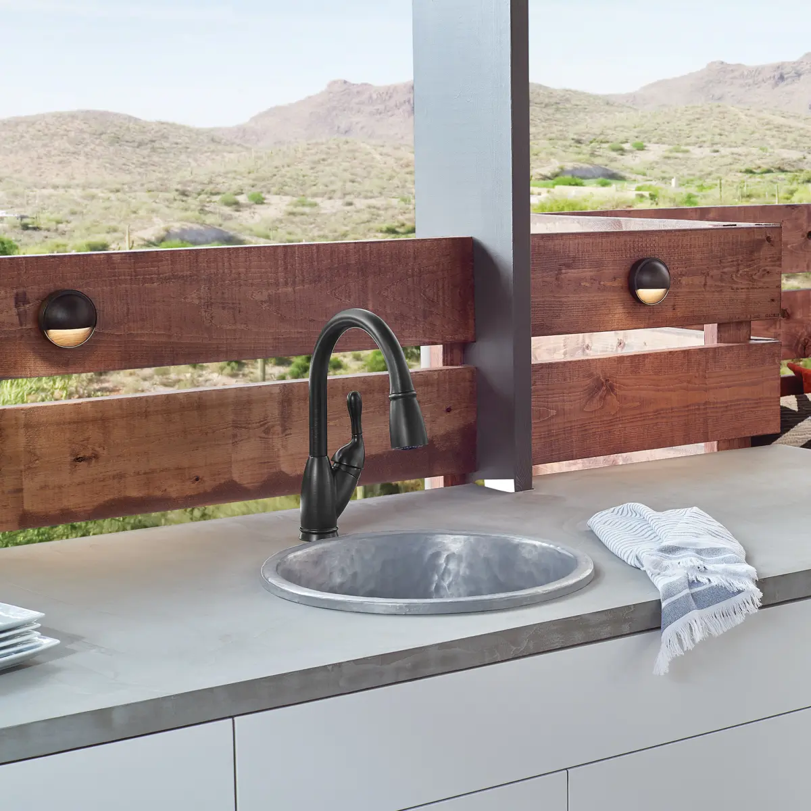
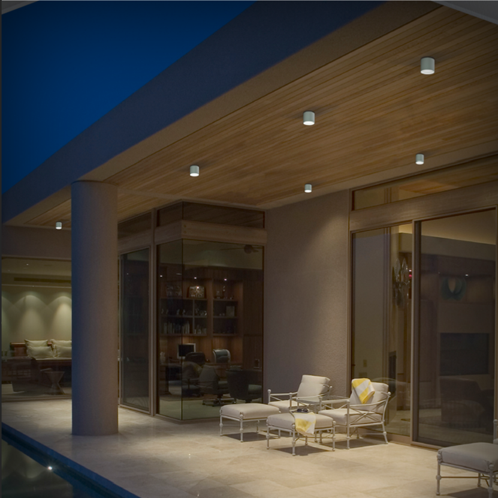

Drive through any neighborhood at night and you'll see the difference immediately: some homes glow — warm, layered, welcoming — while others sit dark behind a single harsh floodlight. The glowing houses aren't spending more on electricity; they're following a plan. Great exterior lighting is equal parts curb appeal, safety, and hospitality, and it comes down to three ingredients: well-placed wall lights, thoughtfully spaced path lights, and one non-negotiable rule about color temperature. Here's the complete designer playbook.
The Short Answer
Start With the Rule That Ties Everything Together: Warm Light, Everywhere
Warm light flatters brick, stone, wood, and landscaping; it reads as "home." Cool white (4000K+) reads as "parking lot," flattens materials, and creates glare. Designers even suggest going warmer still — down toward 2200–2700K — for landscape and garden lighting, where a candlelight tone feels most natural.
The pro move for consistency: choose your landscape path lighting Kelvin temperature first, then swap the bulbs in any existing exterior fixtures — porch lanterns, garage lights, post lights — to match that same range. One mismatched cool-white bulb on the garage will stick out from the whole composition every night. See our bulb color temperature guide for the full Kelvin breakdown.
Two more universal specs before we place fixtures:
- Weather ratings matter. Use damp-rated fixtures under covered porches and eaves; wet-rated fixtures anywhere rain hits directly; and for ground-level landscape and in-ground lights, look for IP65 or higher.
- Think in layers, just like indoors. Designers plan exteriors with the same three layers as living rooms: ambient (wall lanterns, post lights) sets the tone, task (path, step, and entry lighting) handles safety, and accent (uplights on trees and architecture) adds the drama. See our layered living room lighting guide for the indoor framework this mirrors outdoors.
Resist lighting everything evenly — contrast is the design. Let focal points glow while surrounding areas stay softly dim; shadows give an exterior depth.
Warm, welcoming glow on brick and stone.
Harsh, flat, glare on materials.
Wall Lights: The Anchor of Your Exterior
The front entry is your home's handshake, and flanking sconces are the anchor of the whole scheme.
Sizing — the door math
- Sconce height should be 1/4 to 1/3 the height of your front door. For a standard 80" door: pairs flanking the door look right at about 1/4 (roughly 20"); a single sconce on one side can go larger, toward 1/3 (up to ~26").
- When in doubt, size up. Fixtures always look smaller from the street than they do in your hands — undersized entry lights are the single most common exterior mistake.
Placement
- Mount sconces so the center of the fixture sits about 60–66 inches above the ground — roughly eye level.
- Keep fixtures about 6 inches from the door frame.
- A flush mount above the door should be at least 1/4 the door's width; a hanging pendant on a covered porch should be about 1/5 the door height with at least 7 feet of clearance to the ground.
Don't stop at the front door. Repeat sconces at the garage — same 60–66" mounting height. Side and back doors get the same treatment, and a sconce or two at the patio turns the backyard into an evening room. Matching the fixture family across all locations is what makes an exterior feel composed. Our finishes guide applies outdoors too — pick one dominant exterior finish and stay consistent.

Path Lights: The Welcome Mat of Light
Path lighting guides guests to your door safely and makes the approach feel intentional.
The placement rules:
- Space path lights 6 to 8 feet apart along the walkway, about 6 inches in from the path's edge.
- Stagger them — alternating sides of the path looks natural. Lining both sides symmetrically creates the dreaded "airport runway" effect.
- Standard path lights stand 15–21 inches tall and each throws a soft pool roughly 8–10 feet wide.
- Light every step and level change — recessed step lights or downward wall lights at stairs are a safety non-negotiable.
- For driveways, taller post or bollard lights spaced 10–15 feet apart define the edges.
Low-voltage LED is the default choice — safe to DIY, efficient, and long-lived. Solar path lights are the zero-wiring option where sun exposure is reliable. Browse landscape and path lighting for stake, bollard, and low-voltage kits.
6–8 ft apart · stagger sides · 6" from edge
Accent Lighting: The Layer That Makes It "Designed"
This is the difference between a lit house and a stunning one:
- Uplight your best trees. A ground-mounted spotlight washing up a mature tree's trunk and canopy is the highest-impact move in landscape lighting.
- Graze your architecture. Fixtures placed 12–18 inches from a stone, brick, or stucco wall, angled up along the surface, reveal texture beautifully at night.
- Highlight, don't floodlight, the facade. Narrow beams (10–25°) for architectural details and trees; wider beams for gentle washes.
- Downlight from eaves or trees ("moonlighting") casts soft, natural pools across walkways and gardens.
- Favor dark-sky-friendly fixtures that aim light down and sideways rather than up into the night.
Controls: Set It and Forget It
- Dusk-to-dawn photocells or smart timers should run the ambient and path layers automatically.
- Zone it: entry/facade, paths, and backyard on separate controls.
- Save motion sensors for utility zones — side yards, driveway, garage approach. Motion lights constantly snapping on and off will drive you crazy anywhere you actually sit outside.

The Complete Starter Plan (Most Homes)
- A pair of sconces flanking the front door (1/4 door height, centers at ~66")
- Matching sconces at the garage (one per side)
- 4–8 staggered path lights from driveway or sidewalk to the entry (6–8 ft apart)
- Two or three accent uplights — best tree, and a wash on the facade's best feature
- A sconce or ceiling fixture at the back door/patio
- Everything in one finish, everything 2700K, everything on dusk-to-dawn control
That's roughly 10–14 light points — modest, achievable in a weekend or one electrician visit, and utterly transformative from the curb.
Common Mistakes
- Cool white bulbs outdoors. 4000K+ reads as commercial parking-lot light — stay at 2700K–3000K everywhere.
- Runway path lighting. Symmetric fixtures on both sides of a walk look like an airport, not a home — stagger instead.
- Undersized entry sconces. Fixtures always look smaller from the street — when torn, size up.
- Motion sensors everywhere. Reserve motion for side yards and garage approach; constant snapping ruins outdoor living areas.
Quick Answers
What color temperature is best for outdoor lighting?
Warm white, 2700K–3000K, consistent across every fixture. Landscape lighting can go even warmer (2200–2700K) for a candlelit garden feel.
What size should my front door lights be?
1/4 to 1/3 the height of the door — about 20–26 inches for a standard 80" door. Size up when torn; fixtures look smaller from the street.
How high should outdoor wall lights be mounted?
Center of the fixture about 60–66 inches above the ground, roughly eye level, about 6 inches from the door frame.
How far apart should path lights be?
6 to 8 feet apart, about 6 inches from the path edge, staggered on alternating sides to avoid the runway look.
What's the difference between damp-rated and wet-rated fixtures?
Damp-rated handles humidity and covered locations (porches, eaves); wet-rated withstands direct rain and snow. Match the rating to the exposure, and use IP65+ for ground-level landscape fixtures.
Do outdoor lights deter burglars?
A well-lit exterior improves visibility and removes hiding spots; motion-sensor lights at side yards, the driveway, and garage add an alert layer where constant light isn't wanted.
Ready to shop?
Our outdoor collections from Hinkley and Hubbardton Forge include coordinated families — sconces, post lights, and path lights in matching finishes — so your whole exterior speaks one design language. Browse the Outdoor edit, or send our specialists a daytime photo of your home's front and we'll sketch a fixture plan with sizes and placement, free.